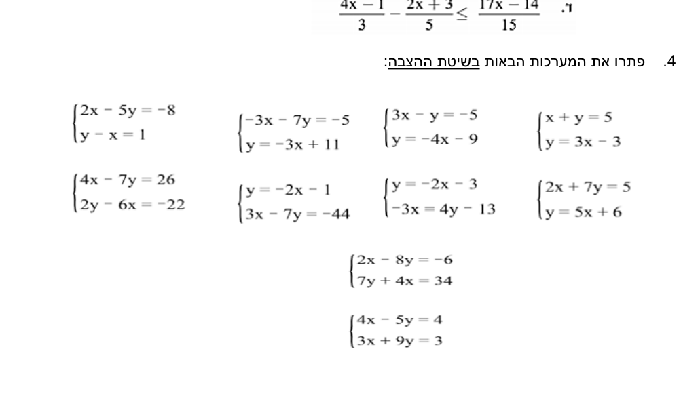

בתחנה 5 מצאת נקודת חיתוך של שני ישרים מתוך המשוואות שלהם.
היום עושים בדיוק את אותו הדבר — רק בלי גרף בכלל:
שתי משוואות, שני נעלמים, ושיטה אחת מסודרת שנקראת הצבה.
בסוף העמוד תדעי: לבדוק אם זוג מספרים הוא פתרון של מערכת ·
לבחור בחוכמה איזה נעלם לבודד · לפתור בשיטת ההצבה צעד-צעד, עם בדיקה בשתי המשוואות ·
לתרגם בעיה מילולית למערכת.
תסתכלי על המשוואה \(\textcolor{#7C3AED}{y}-\textcolor{#2563EB}{x}=1\).
יש בה שני נעלמים — ולכן אין לה פתרון אחד, יש לה אינסוף:
הזוג \((0,\,1)\) מתאים, וגם \((1,\,2)\),
וגם \((5,\,6)\) — כל זוג שבו ה-\(\textcolor{#7C3AED}{y}\)
גדול מה-\(\textcolor{#2563EB}{x}\) באחד.
כדי לקבל תשובה אחת ויחידה צריך עוד דרישה.
כשכותבים שתי משוואות יחד, עם סוגר מסולסל שמחבר אותן, מקבלים מערכת:
הסוגר אומר: אנחנו מחפשות זוג \((\textcolor{#2563EB}{x},\,\textcolor{#7C3AED}{y})\)
שמקיים את שתי המשוואות בו-זמנית — לא רק אחת מהן.
נבדוק שני מועמדים, כדי להרגיש את ההבדל.
הזוג \((4,\,5)\): במשוואה הראשונה
\(5-4=1\) ✓ — אבל בשנייה
\(2\cdot 4-5\cdot 5=8-25=-17\), ממש לא \(-8\) ✗.
מקיים רק אחת — לא פתרון של המערכת.
הזוג \((1,\,2)\): בראשונה
\(2-1=1\) ✓, ובשנייה
\(2\cdot 1-5\cdot 2=2-10=-8\) ✓.
מקיים את שתיהן — זה הפתרון.
הגדרה
פתרון של מערכת משוואות הוא זוג \((\textcolor{#2563EB}{x},\,\textcolor{#7C3AED}{y})\)
שמקיים את כל המשוואות במערכת בו-זמנית.
לכן בסוף כל תרגיל התשובה היא זוג — גם
\(\textcolor{#2563EB}{x}\) וגם \(\textcolor{#7C3AED}{y}\),
לא מספר אחד.
ולמה זה מרגיש מוכר? כי כל משוואה כזו היא בעצם ישר —
בדיוק כמו בתחנה 5.
כל הזוגות שמקיימים את המשוואה הראשונה יושבים על ישר אחד,
כל הזוגות של השנייה — על ישר שני, והפתרון של המערכת הוא הנקודה היחידה
שיושבת על שניהם:
\((1,\,2)\) — הנקודה היחידה שעל שני הישרים: הפתרון של המערכת.
2שיטת ההצבה — ארבעה צעדים קבועים
הרעיון של השיטה פשוט ויפה: אם יודעים להגיד את
\(\textcolor{#7C3AED}{y}\) באמצעות
\(\textcolor{#2563EB}{x}\), אפשר להציב את הביטוי הזה
במשוואה השנייה — ופתאום נשארת משוואה עם נעלם אחד,
מהסוג שאת פותרת מתחנה 2 בעיניים עצומות.
מבודדים נעלם מאחת המשוואות — ובוחרים את הקל!
(נעלם עם מקדם 1 או \(-1\), ותכף נדבר על זה.)
מציבים את הביטוי שקיבלנו במשוואה השנייה —
תמיד בתוך סוגריים.
פותרים את המשוואה שנוצרה — יש בה עכשיו נעלם אחד בלבד.
מציבים חזרה ומוצאים את הנעלם השני —
ובודקים את הזוג בשתי המשוואות המקוריות.
שימי לב לצעד 2: מציבים במשוואה השנייה, זו שעוד לא השתמשנו בה.
הצבה חזרה באותה משוואה שממנה בודדנו תיתן משפט אמת ריק כמו
\(1=1\) — נכון, אבל לא מקדם אותנו.
ועכשיו נראה את כל ארבעת הצעדים על מערכת אמיתית.
3דוגמה מלאה, צעד אחרי צעד
נפתור יחד את המערכת שכבר הכרנו — הפעם בלי לדעת את התשובה מראש:
צעד 1 — מבודדים נעלם.
במשוואה הראשונה ה-\(\textcolor{#7C3AED}{y}\) עומד עם מקדם 1 —
הוא הקל ביותר לבידוד, בצעד יחיד:
צעד 1 — בידוד y מהמשוואה הראשונה
$$\begin{aligned}
\textcolor{#7C3AED}{y}-\textcolor{#2563EB}{x} &= 1 &&\qquad\textcolor{#C0392B}{/\;{+x}}\\[2pt]
\textcolor{#7C3AED}{y} &= \textcolor{#2563EB}{x}+1
\end{aligned}$$
סגול — \(y\), הנעלם שבודדנו אדום — הפעולה, על שני האגפים כרגיל
צעד 2 — מציבים בשנייה.
עכשיו אנחנו יודעות ש-\(\textcolor{#7C3AED}{y}\) זה בדיוק
\(\textcolor{#7C3AED}{x+1}\) —
אז בכל מקום שבו המשוואה השנייה אומרת \(\textcolor{#7C3AED}{y}\),
נכניס במקומו את הביטוי, בתוך סוגריים:
צעד 2 — הביטוי הסגול נכנס במקום ה-y
$$2\textcolor{#2563EB}{x}-5(\underbrace{\textcolor{#7C3AED}{x+1}}_{\textcolor{#7C3AED}{y}})=-8$$
סגול — הביטוי שהחליף את ה-\(y\); הסוגריים שומרים עליו שלם כחול — נשאר נעלם אחד בלבד: \(x\)
מציבים עם סוגריים — תמיד!
ה-\(-5\) כופל את כל הביטוי שנכנס:
$$-5(\textcolor{#7C3AED}{x+1})=-5\textcolor{#2563EB}{x}-5$$
מי שמציבה בלי סוגריים מקבלת \(-5\textcolor{#2563EB}{x}+1\) —
היא כפלה רק את האיבר הראשון, וכל ההמשך מתקלקל.
צעד 3 — פותרים. נשארה משוואה רגילה עם נעלם אחד,
ופותרים אותה בדיוק כמו בתחנה 2:
צעד 3 — משוואה עם נעלם אחד
$$\begin{aligned}
2\textcolor{#2563EB}{x}-5(\textcolor{#7C3AED}{x+1}) &= -8 &&\qquad\textcolor{#C0392B}{\text{פותחים סוגריים}}\\[2pt]
2\textcolor{#2563EB}{x}-5\textcolor{#2563EB}{x}-5 &= -8 &&\qquad\textcolor{#C0392B}{\text{מכנסים איברים}}\\[2pt]
-3\textcolor{#2563EB}{x}-5 &= -8 &&\qquad\textcolor{#C0392B}{/\;{+5}}\\[2pt]
-3\textcolor{#2563EB}{x} &= -3 &&\qquad\textcolor{#C0392B}{/\;{:}\,({-3})}\\[2pt]
\textcolor{#2563EB}{x} &= \mathbf{1}
\end{aligned}$$
כחול — הנעלם היחיד שנשאר אדום — כל פעולה, שורה אחר שורה, על שני האגפים
צעד 4 — מציבים חזרה.
מצאנו את \(\textcolor{#2563EB}{x}\) — אבל התשובה היא זוג,
אז חוזרים לביטוי המבודד מצעד 1 ומחלצות ממנו את
\(\textcolor{#7C3AED}{y}\):
קיבלנו את הזוג \((1,\,2)\) — בדיוק נקודת החיתוך מהציור למעלה. ועכשיו הבדיקה:
הבדיקה — בשתי המשוואות, לא רק באחת
מציבות את הזוג \((1,\,2)\) בשתי המשוואות המקוריות:
הראשונה: \(\textcolor{#7C3AED}{2}-\textcolor{#2563EB}{1}=1\) ✓
השנייה: \(2\cdot\textcolor{#2563EB}{1}-5\cdot\textcolor{#7C3AED}{2}=2-10=-8\) ✓
זוג שעובר רק משוואה אחת הוא לא פתרון — ראינו את זה עם
\((4,\,5)\) בתחילת העמוד. לכן בודקים תמיד את שתיהן.
4איזה נעלם לבודד? בוחרים את הקל
בצעד 1 יש לך חופש בחירה: ארבעה נעלמים בשתי המשוואות, ואפשר לבודד כל אחד מהם.
כולם יובילו לאותה תשובה — אבל לא באותו מאמץ.
ההשוואה הזו אומרת הכל:
לבודד את \(\textcolor{#7C3AED}{y}\) מ-\(y-x=1\) —
צעד אחד נקי: \(\textcolor{#7C3AED}{y}=\textcolor{#2563EB}{x}+1\).
לבודד את \(\textcolor{#2563EB}{x}\) מ-\(2x-5y=-8\) —
מקבלים \(\textcolor{#2563EB}{x}=\dfrac{-8+5\textcolor{#7C3AED}{y}}{2}\):
שבר שילווה אותנו בכל שאר התרגיל, ואיתו הרבה מקומות לטעות.
הכלל המעשי
מחפשות נעלם עם מקדם 1 או \(-1\) —
אותו הכי קל לבודד, בלי שברים.
ואם אחת המשוואות כבר כתובה בצורה
\(\textcolor{#7C3AED}{y}=\ldots\) —
חצי מהעבודה כבר נעשתה בשבילך: מדלגות ישר לצעד ההצבה.
5דוגמה שנייה — כשהנעלם כבר מבודד
בדיוק מקרה כזה — במשוואה השנייה ה-\(\textcolor{#7C3AED}{y}\) כבר עומד לבד:
בתחנה הבאה נצלול לבעיות מילוליות — אבל את הגשר אפשר לחצות כבר עכשיו,
כי הרבה סיפורים הם בדיוק מערכת בתחפושת. למשל:
סכום שני מספרים הוא 20,
וההפרש ביניהם הוא 4.
מהם שני המספרים?
נסמן את המספר הגדול ב-\(\textcolor{#2563EB}{x}\).
את המספר הקטן נסמן ב-\(\textcolor{#7C3AED}{y}\).
"סכום" נותן משוואה אחת, "הפרש" נותן שנייה — וכל משפט בסיפור הפך לשורה במערכת:
מכאן זו כבר דרך סלולה. מבודדות את \(\textcolor{#2563EB}{x}\)
מהמשוואה השנייה (מקדם 1 — הבחירה הקלה):
\(\textcolor{#2563EB}{x}=\textcolor{#7C3AED}{y}+4\),
ומציבות בראשונה:
פתרון הסיפור בשיטת ההצבה
$$\begin{aligned}
(\underbrace{\textcolor{#7C3AED}{y}+4}_{\textcolor{#2563EB}{x}})+\textcolor{#7C3AED}{y} &= 20 &&\qquad\textcolor{#C0392B}{\text{הצבה במשוואה הראשונה}}\\[4pt]
2\textcolor{#7C3AED}{y}+4 &= 20 &&\qquad\textcolor{#C0392B}{/\;{-4}}\\[2pt]
2\textcolor{#7C3AED}{y} &= 16 &&\qquad\textcolor{#C0392B}{/\;{:}\,2}\\[2pt]
\textcolor{#7C3AED}{y} &= \mathbf{8}
\end{aligned}$$
כחול — ה-\(x\) שמתחת לסוגר: הביטוי שבסוגריים נכנס במקומו אדום — הפעולות, על שני האגפים
ואז חזרה: \(\textcolor{#2563EB}{x}=\textcolor{#7C3AED}{8}+4=12\).
המספרים הם 12 ו-8.
בדיקה מול הסיפור עצמו: הסכום \(12+8=20\) ✓,
ההפרש \(12-8=4\) ✓ — שני הנתונים מתקיימים.
מצאי את זוג הפתרון \((x,\,y)\) — ובדקי בשתי המשוואות.
נסי לנחש את השלב הבא לפני שאת פותחת אותו.
שלב ראשון — מה כבר מבודד?
המשוואה הראשונה כבר בצורה
\(\textcolor{#7C3AED}{y}=\textcolor{#2563EB}{x}+1\) —
חצי מהעבודה נעשתה. מדלגות ישר להצבה במשוואה השנייה.
שלב שני — ההצבה, עם סוגריים
במקום ה-\(\textcolor{#7C3AED}{y}\) נכנס הביטוי, שלם ובסוגריים:
$$\textcolor{#2563EB}{x}+2(\textcolor{#7C3AED}{x+1})=8\qquad\Longrightarrow\qquad \textcolor{#2563EB}{x}+2\textcolor{#2563EB}{x}+2=8$$
שימי לב: ה-2 כפל את שני האיברים שבסוגריים.
מציבות חזרה:
\(\textcolor{#7C3AED}{y}=\textcolor{#2563EB}{2}+1=3\) הזוג: \((2,\,3)\).
בדיקה בשתיהן — הראשונה: \(3=2+1\) ✓,
השנייה: \(2+2\cdot 3=8\) ✓.
המערכת בציור: כל משוואה היא ישר, והזוג
(2, 3) הוא הנקודה היחידה שיושבת על שניהם —
לכן הוא מקיים את שתי המשוואות בבת אחת.
אותה שאלה בתחפושות — איך עוד מנסחים "פתרי מערכת"?
"פתרי את מערכת המשוואות בשיטת ההצבה."
"מצאי את נקודת החיתוך של הישרים \(y=x+1\)
ו-\(x+2y=8\)" — תחפושת גרפית, אותו חישוב בדיוק.
"מצאי זוג מספרים שמקיים את שתי המשוואות בו-זמנית."
"בדקי האם הזוג \((2,\,3)\) הוא פתרון המערכת" —
התחפושת ההפוכה: לא פותרים, רק מציבים בשתי המשוואות ובודקים.
הניסוח מתחלף — הדרך זהה: לבודד, להציב, לפתור, ולבדוק בשתיהן.
זה הדף שאת מקבלת בכיתה. את המערכת הראשונה משמאל
(\(2x-5y=-8\) עם \(y-x=1\))
כבר פתרנו יחד בסעיף 3 — עכשיו תורך: פתרי במחברת שתי מערכות נוספות מהדף,
ואז השווי לפתרון המלא כאן למטה.

תרגיל 4 מהדף: עשר מערכות לפתרון בשיטת ההצבה. בפתרון למטה —
המערכת עם \(y=-3x+11\) והמערכת עם \(y=5x+6\).הצגי פתרון מלא (כמו שכותבים במחברת)
שמת לב? בשתי המערכות המקדם של ה-\(x\) יצא גדול
(18, 37) — וזה דווקא נוח: חילוק אחד והתרגיל נגמר.
עכשיו את המורה
מצאי את הטעות של דנה
דנה רצתה לבודד את ה-\(x\) מהמשוואה
\(2x-5y=-8\), וכתבה במחברת:
$$2x=-8+5y\;\;/\;{:}\,2\qquad\Longrightarrow\qquad x=-8+\frac{5y}{2}$$
השורה הראשונה נכונה — אבל בשנייה מסתתרת טעות. מצאי אותה, וכתבי את הבידוד הנכון.
הצגי תשובה
קודם בדיקת מורה מהירה, שחושפת שמשהו לא תקין עוד לפני שמבינים מה:
ניקח \(\textcolor{#7C3AED}{y}=0\).
לפי דנה יוצא \(\textcolor{#2563EB}{x}=-8\) —
אבל במשוואה המקורית: \(2\cdot(-8)-5\cdot 0=-16\),
וזה ממש לא \(-8\) ✗.
הזוג של דנה לא מקיים את המשוואה שלה עצמה.
הטעות: חילוק ב-2 הוא פעולה על כל האגף —
כל איבר ואיבר מתחלק. דנה חילקה רק את ה-\(5y\),
וה-\(-8\) נשאר שלם. הבידוד הנכון:
ובדיקה עם אותו \(\textcolor{#7C3AED}{y}=0\):
עכשיו יוצא \(\textcolor{#2563EB}{x}=-4\),
ובמקור: \(2\cdot(-4)-0=-8\) ✓.
ורגע של חוכמת בחירה: כל השברים האלה היו נחסכים אילו דנה הייתה מבודדת
נעלם עם מקדם 1 — בדיוק כמו שעשינו בסעיף 3, כשבחרנו את
ה-\(\textcolor{#7C3AED}{y}\) מ-\(y-x=1\).
הבחירה החכמה בצעד 1 היא חצי מהפתרון.